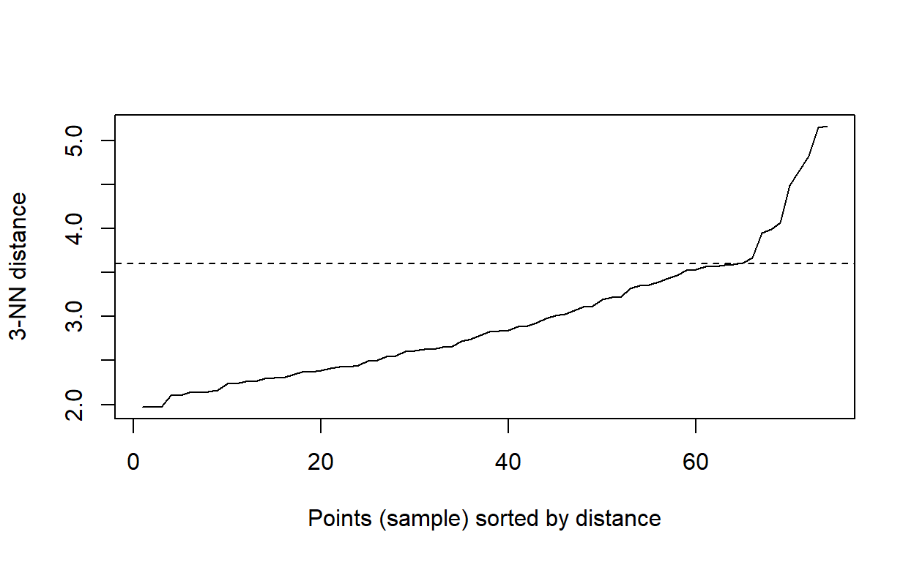

You have now learned about enough statistical techniques to try applying them to the full PISA data set. The question that we are going to be interested in is whether policy changes lead to improved scores on the PISA tests when controlling for educational culture. For example, Northern Europe may have better-performing students because it spends more money on education, or it could be because the students experience less financial instability.
The way that we are going to answer this question is by seeing whether countries form clusters with each other. If there are clusters of countries with similar educational environments, we can use mixed-effects models to see whether the policy levers most available to governments, level of spending and the time the students are expected to dedicate to learning, are equally effective.
The PISA data has thousands of potentially predictive variables. Not only would this lead to the clustering methods taking a long time to run, but correlations between variables can cause problems. We will therefore want to use the PCA techniques to compress the data into more easily handled dimensions.
The first step in any analysis is loading the data. For the purposes of this tutorial, this will be loading a pre-processed dataset which contains the country-level means for a selection of potentially meaningful variables in the student and school questionnaires.
countrySummary <- read_csv("countrySummary.csv")names(countrySummary[,1:26])## [1] "CNT" "Country" "GNI"
## [4] "StudentTeacherRatio" "TeacherMasters" "ClassSize"
## [7] "ExtraCur" "MaterialShortages" "StaffShortages"
## [10] "StudentBehaviour" "TeacherBehaviour" "Attitude"
## [13] "Bullying" "Discipline" "SocioEcoStatus"
## [16] "ParentEducation" "Competitiveness" "Cooperation"
## [19] "TeacherFeedback" "TeacherEngagment" "TeacherInterest"
## [22] "TeacherSupport" "TruantDay" "TruantClass"
## [25] "PositiveAffect" "LearningTime"Looking through the selected variables, it’s obvious that many of the variables are measuring similar things and will probably be highly correlated. For example, it makes sense that higher spending on education will lead to fewer staff and material shortages, leading to a lower student-teacher ratio. This is a problem because one of the main weaknesses of clustering algorithms is that they default to equally weighting variables when calculating Euclidean distances. This is why in the previous example the predictive variables were scaled. In this case, leaving the variables as they are now would probably lead to levels of spending being more important than any other relevant factor. The solution to this problem is from the Principal Components Analysis, which will be implemented in the next section.
The way around the problem of correlated variables and subsequently uneven weighting is to use the Principal Components Analysis (PCA) from earlier. There is no definitive answer about how many principal components to choose. For this model, we will aim to use components that explain 90% of the total variance. Any components above this cut-off will be discarded. This should capture a good amount of the differences between countries while still working towards our aim of data compression.
cnt_pca <- principal(countrySummary[3:26],
nfactors = 11, #Number of factors to include in the solution
rotate = 'varimax', #Method to decide the rotation of the components. Leads to different interpretations of the components (i.e. whether they can be correlated) but does not change the explained variance.
missing = TRUE) #Predict component values if some data is missing
cnt_pca$loadings##
## Loadings:
## RC2 RC1 RC3 RC4 RC11 RC6 RC5 RC10
## GNI -0.208 -0.700 -0.304 -0.206 0.122
## StudentTeacherRatio 0.132 0.927 0.145 0.162 0.135
## TeacherMasters 0.125 0.931 0.126 0.170 0.137
## ClassSize 0.203 0.666 0.442 0.145 -0.167
## ExtraCur 0.224 -0.145
## MaterialShortages -0.106 0.763 0.169 0.352 0.171
## StaffShortages -0.204 0.117 0.214 -0.123 0.338 0.337 0.362
## StudentBehaviour 0.121 0.900 -0.168 -0.143
## TeacherBehaviour 0.866 0.225
## Attitude -0.155 0.116 0.861
## Bullying 0.842 0.216 -0.104 0.135 0.128 -0.182 -0.157
## Discipline 0.666 -0.341 -0.146 -0.237 0.388
## SocioEcoStatus -0.128 -0.436 -0.352 -0.183 -0.752
## ParentEducation -0.283 -0.119 -0.910
## Competitiveness 0.681 -0.102 0.108 0.296 0.351
## Cooperation 0.159 -0.130 -0.148 0.908
## TeacherFeedback 0.808 0.118 -0.112 -0.173 0.172 0.204
## TeacherEngagment 0.521 0.147 0.633 -0.190 0.136
## TeacherInterest 0.527 0.267 0.218 0.580 0.135
## TeacherSupport 0.542 0.281 0.331 -0.172 0.575
## TruantDay 0.115 0.967
## TruantClass 0.122 0.969
## PositiveAffect 0.100 0.312 0.193 0.220 0.157
## LearningTime 0.146 -0.104 0.131
## RC9 RC8 RC7
## GNI -0.242 0.111
## StudentTeacherRatio
## TeacherMasters
## ClassSize
## ExtraCur 0.883 0.206
## MaterialShortages -0.207 0.183
## StaffShortages -0.560 -0.228 0.247
## StudentBehaviour 0.130
## TeacherBehaviour -0.181
## Attitude 0.189
## Bullying 0.145
## Discipline 0.199 -0.228
## SocioEcoStatus -0.125
## ParentEducation
## Competitiveness 0.264
## Cooperation 0.151
## TeacherFeedback 0.143 0.148
## TeacherEngagment 0.203 0.247
## TeacherInterest 0.296 0.102
## TeacherSupport -0.149
## TruantDay
## TruantClass
## PositiveAffect 0.814
## LearningTime 0.196 0.899
##
## RC2 RC1 RC3 RC4 RC11 RC6 RC5 RC10 RC9 RC8
## SS loadings 2.917 2.835 2.451 2.318 2.088 1.963 1.917 1.315 1.299 1.168
## Proportion Var 0.122 0.118 0.102 0.097 0.087 0.082 0.080 0.055 0.054 0.049
## Cumulative Var 0.122 0.240 0.342 0.438 0.525 0.607 0.687 0.742 0.796 0.845
## RC7
## SS loadings 1.154
## Proportion Var 0.048
## Cumulative Var 0.893
With the variables compressed into principal components, we can move onto the clustering solution. We will use both k-means and density-based clustering, as explained in the clustering section.
The first step is to determine the parameters for the density clustering. As the number of data points is still quite small, MinPts can be set to 3. We can then use a K-Nearest Neighbors plot to find \(\epsilon\) by looking for an elbow.
dbscan::kNNdistplot(principal_dat[2:12], k = 3)
abline(h = 3.6, lty = 2)
When looking at this graph, the most obvious elbow is after the plateau when the distance is 3.6, so this will be used for the analysis.
db <- fpc::dbscan(principal_dat[2:12], eps = 3.6, MinPts = 3)
principal_dat$cluster <- as.factor(db$cluster)
db## dbscan Pts=74 MinPts=3 eps=3.6
## 0 1
## border 6 3
## seed 0 65
## total 6 68As you can see from this output, the dbscan function has determined that there is a single cluster of countries with six outliers. These countries are listed in the table below. This is not ideal for our research plan, which assumed that clusters of countries would be found. It will therefore be interesting to see if this result replicates when using the K-means algorithm.
| Outliers |
|---|
| Albania |
| Lebanon |
| Morocco |
| North Macedonia |
| Philippines |
| Saudi Arabia |
The scoring function for the K-Means will be the Calinski-Harabasz index or Ch which minimises the ratio between the summed squared distance within the individual clusters and the cluster space as a whole. Ch tends to lead to evenly shaped and equally sized clusters which can explain less variance but are less vulnerable to overfitting.
principal_dat <- cbind(countrySummary[,2], cnt_pca$scores)
km_cluster <- kmeansCBI(principal_dat[,2:12],
krange = 1:(nrow(principal_dat)-1), #Automatically tests every value of K up from one to one less than the number of countries
criterion = "ch",
runs = 400) #The number of random centroid positions to try## $result
## $result$crit
## [1] 0.000000 6.176530 6.258898 6.175005 6.250257 6.423459 6.477061
## [8] 6.615525 6.728376 6.761301 6.729177 6.573668 6.472134 6.379101
## [15] 6.331047 6.277774 6.328722 6.325142 6.403328 6.376392 6.342129
## [22] 6.370233 6.347342 6.376774 6.351821 6.328892 6.310824 6.317438
## [29] 6.319252 6.335003 6.343203 6.289129 6.290141 6.256650 6.234466
## [36] 6.249156 6.272368 6.279613 6.351396 6.303066 6.340823 6.387358
## [43] 6.326672 6.410381 6.447263 6.454858 6.489848 6.621450 6.746584
## [50] 6.874731 6.832196 6.997924 7.135003 7.230307 7.502836 7.668662
## [57] 7.595735 8.223813 8.211969 8.215140 8.322746 8.941426 8.902007
## [64] 9.439655 9.318651 9.764008 10.407223 10.890498 11.203785 13.116208
## [71] 13.412406 17.536846 31.667346
##
## $result$bestk
## [1] 1
##
##
## $nc
## [1] 1
##
## $clusterlist
## $clusterlist[[1]]
## logical(0)
##
##
## $partition
## NULL
##
## $clustermethod
## [1] "kmeans"Despite checking 73 different values of K 400 times, the K-Means method also found an optimal clustering solution with a single cluster. This does not support our hypothesis that there are different clusters of teaching cultures.
On the one hand, it is disappointing to find that only a single cluster is good enough to describe the data because it suggests that there are no unique groupings of countries based on their teaching culture. However, this also makes the analysis with mixed-effects model easier because it should mean that a single mixed-effects model can be effectively used for the whole data set.
However, for the purpose of demonstration, we will also run an analysis which does not allow a single cluster as an option.
km_cluster_demo <- kmeansCBI(principal_dat[,2:12],
krange = 2:(nrow(principal_dat)-1), #Automatically tests every value of K up from one to one less than the number of countries
criterion = "ch",
runs = 400) #The number of random centroid positions to try
Now that we have found that the countries form a single, large cluster, we can move onto modelling the effecting of spending and learning time on students’ scores. To do this, we will be using the mixed-effects models. While it would be possible to include the question subject as a random effect in a single model, we will split them into three models. This is because it may be interesting to see how the effectiveness of spending and learning time changes.
Once again, the first step is to load in the data. This analysis will use 2000 students from the original PISA data set. The data is structured in long format, so each row represents one question answered by a student.
dat <- read_csv("Sample_Students.csv") %>%
inner_join(select(countrySummary, CNT), by = "CNT")We can now run a model for each type of question answered by the students. In this most basic model, when setting up the random effects, we have the spending and learning time variables which vary by country, each question answered, and the individual taking the test.
#Builds mixed effect model using all countries
GLMM_read <- lmer(Score ~ Spending * Learning +
(1 + Spending * Learning | CNT) +
(1 | ID) +
(1 | Item),
data = filter(dat, str_detect(Item, "READ")))
GLMM_read_summary <- summary(GLMM_read)
GLMM_math <- lmer(Score ~ Spending * Learning +
(1 + Spending * Learning | CNT) +
(1 | ID) +
(1 | Item),
data = filter(dat, str_detect(Item, "MATH")))
GLMM_math_summary <- summary(GLMM_math)
GLMM_scie <- lmer(Score ~ Spending * Learning +
(1 + Spending * Learning | CNT) +
(1 | ID) +
(1 | Item),
data = filter(dat, str_detect(Item, "SCIE")))
GLMM_scie_summary <- summary(GLMM_scie)Now that we have successfully run the model, we can interpret the results to see if we can answer our original question: Is it always effective to increase education spending and learning time to improve reading, mathematics, and science ability in 15-year-olds?
| Subject | Spending | Learning Time | Spending x Learning | Marginal R2 | Total R2 |
|---|---|---|---|---|---|
| Reading | 21.18 | -2.37 | 19.72 | 0.15 | 0.96 |
| Maths | 24.45 | -6.65 | 13.78 | 0.14 | 0.90 |
| Science | 25.22 | -5.03 | 15.62 | 0.16 | 0.92 |
The tables above show the fixed effects coefficients, the marginal R2, and total R2 for each of the models. The marginal R2 represents the variance explained by our fixed effects, while total R2 represents the variance explained by the whole model. We can see here that spending has the largest impact on student performance, while learning time seems to have a small negative effect. However, it is important to note that the positive interaction between spending and learning time means that more time spent learning will generally lead to better performance if their country’s spending is above the mean. At the same time, the fixed effects still only account for ~15% of the variance, which would suggest that there are still many other factors affecting students’ performance that are not simply correlated with these two variables.
Below there is a density plot where you can see the distribution of scores and how they relate to changes in spending and learning time. The line of best fit uses the fixed effects from the models we have generated.
The final step in this process is cross-validation. As explained in the previous section, this involves testing our methods on a different dataset to the one which the models were made with. This is often done using a sub-sample of the training data, but we have the advantage of using data from a long-running project. As such, we will validate our findings on the data collected by PISA in 2015. To do this we follow all of the same steps and see whether the same findings emerge. Not all of the same data was collected in the 2015 batch, but the method we have chosen should be robust enough to have the same trends.
#Read the data
countrySummary2015 <- read_csv("CountrySummary2015.csv")#PCA
cnt_pca2015 <- principal(countrySummary2015[3:24], nfactors = 11)
cnt_pca2015## Principal Components Analysis
## Call: principal(r = countrySummary2015[3:24], nfactors = 11)
## Standardized loadings (pattern matrix) based upon correlation matrix
## RC1 RC2 RC3 RC8 RC5 RC4 RC10 RC11 RC6
## SocioEcoStatus -0.05 -0.27 0.87 -0.22 -0.05 -0.04 -0.23 0.07 0.00
## Attitude 0.77 0.12 0.11 0.23 -0.22 0.27 0.21 -0.13 -0.02
## Discipline 0.13 -0.32 -0.05 0.03 -0.08 0.25 0.11 0.04 0.10
## ParentEducation -0.08 0.03 0.95 -0.10 -0.02 -0.09 -0.05 0.04 0.03
## Cooperation 0.52 -0.12 -0.08 0.23 -0.25 0.13 0.24 0.54 0.14
## TeacherFeedback 0.56 0.53 -0.23 -0.07 0.11 0.34 0.15 0.06 0.03
## TeacherEngagment 0.92 0.04 -0.12 -0.13 0.05 0.02 -0.03 -0.05 0.15
## TeacherSupport 0.89 0.21 -0.11 0.03 0.04 -0.06 0.21 0.03 -0.05
## TruantDay 0.16 0.86 -0.05 -0.06 -0.10 0.01 0.09 -0.20 -0.16
## TruantClass 0.13 0.93 0.02 -0.01 -0.03 -0.04 -0.02 -0.11 0.01
## PositiveAffect -0.14 -0.20 0.17 0.02 -0.02 -0.22 -0.17 0.86 -0.10
## LearningTime 0.25 -0.32 -0.17 0.40 -0.08 0.60 0.03 0.21 -0.06
## Bullying 0.08 -0.09 0.13 -0.10 -0.11 -0.03 -0.04 -0.11 0.08
## ClassSize 0.26 -0.09 -0.53 0.13 0.01 0.34 0.51 -0.15 -0.05
## ExtraCurSciClub 0.05 0.06 -0.10 -0.11 0.07 0.81 -0.05 -0.30 0.27
## MaterialShortage -0.12 0.35 -0.19 0.80 0.18 0.02 0.07 0.04 0.10
## StaffShortage 0.11 -0.23 -0.20 0.86 0.22 -0.01 0.01 0.04 -0.08
## StudentBehaviour -0.08 0.07 0.00 0.12 0.92 -0.06 0.01 0.01 0.15
## StudentTeacherRatio 0.24 0.12 -0.21 0.03 0.11 -0.08 0.88 -0.06 -0.04
## TeacherQualification 0.10 -0.10 0.03 0.01 -0.03 0.17 -0.04 -0.06 0.94
## TeacherBehaviour 0.06 -0.14 -0.11 0.26 0.77 0.14 0.16 -0.13 -0.35
## GNI -0.07 -0.64 0.38 -0.22 -0.22 0.16 -0.07 -0.11 -0.05
## RC7 RC9 h2 u2 com
## SocioEcoStatus -0.13 0.03 0.96 0.037 1.6
## Attitude -0.09 -0.06 0.87 0.133 2.1
## Discipline 0.79 -0.23 0.89 0.110 1.9
## ParentEducation 0.07 0.08 0.94 0.058 1.1
## Cooperation -0.31 -0.07 0.89 0.108 4.5
## TeacherFeedback 0.11 0.28 0.89 0.111 4.0
## TeacherEngagment 0.00 0.09 0.92 0.083 1.2
## TeacherSupport 0.20 0.01 0.94 0.064 1.4
## TruantDay -0.18 -0.08 0.89 0.115 1.5
## TruantClass -0.17 -0.05 0.92 0.075 1.1
## PositiveAffect 0.11 -0.12 0.94 0.061 1.6
## LearningTime 0.15 0.03 0.79 0.208 3.7
## Bullying -0.15 0.93 0.96 0.037 1.2
## ClassSize 0.13 -0.14 0.81 0.192 4.0
## ExtraCurSciClub 0.12 -0.04 0.87 0.131 1.7
## MaterialShortage 0.25 -0.03 0.92 0.079 2.0
## StaffShortage -0.18 -0.12 0.94 0.064 1.6
## StudentBehaviour -0.10 -0.15 0.93 0.072 1.2
## StudentTeacherRatio 0.05 -0.01 0.91 0.091 1.4
## TeacherQualification 0.07 0.08 0.95 0.055 1.2
## TeacherBehaviour 0.11 0.06 0.90 0.098 2.1
## GNI -0.36 0.03 0.83 0.170 3.3
##
## RC1 RC2 RC3 RC8 RC5 RC4 RC10 RC11 RC6 RC7 RC9
## SS loadings 3.13 2.92 2.41 1.89 1.75 1.54 1.35 1.32 1.23 1.21 1.11
## Proportion Var 0.14 0.13 0.11 0.09 0.08 0.07 0.06 0.06 0.06 0.05 0.05
## Cumulative Var 0.14 0.28 0.38 0.47 0.55 0.62 0.68 0.74 0.80 0.85 0.90
## Proportion Explained 0.16 0.15 0.12 0.10 0.09 0.08 0.07 0.07 0.06 0.06 0.06
## Cumulative Proportion 0.16 0.30 0.43 0.52 0.61 0.69 0.75 0.82 0.88 0.94 1.00
##
## Mean item complexity = 2.1
## Test of the hypothesis that 11 components are sufficient.
##
## The root mean square of the residuals (RMSR) is 0.03
## with the empirical chi square 32.71 with prob < 0.89
##
## Fit based upon off diagonal values = 0.99Looking at this PCA output, 11 principal components are sufficient to reach our threshold of explaining 90% of the variance. While the ordering is slightly different, the variables which load together look to be the same as before. It is therefore suitable to move onto the clustering.
For the clustering we will use the same K-Means method as in the original analysis.
principal_dat2015 <- cbind(countrySummary2015[,2], cnt_pca2015$scores) %>% na.omit
km_cluster2015 <- kmeansCBI(principal_dat2015[2:12],
krange = 1:(nrow(principal_dat2015)-1),
criterion = "ch",
runs = 400)## $result
## $result$crit
## [1] 0.000000 5.516918 5.839344 5.701987 5.798150 5.877510 5.932540
## [8] 5.997221 6.068068 6.098370 6.064645 6.053620 6.018401 5.991588
## [15] 5.947941 5.931782 5.904781 5.921622 5.930589 5.961748 6.018612
## [22] 6.036741 6.054341 6.027528 6.027587 6.038852 6.079910 6.143251
## [29] 6.202660 6.347657 6.460505 6.575421 6.651805 6.821424 7.089074
## [36] 7.370057 7.636997 8.029539 8.599146 8.949380 9.782508 10.133498
## [43] 10.452528 10.542406 10.750086 10.863562 11.177081 11.495718 12.363072
## [50] 13.359066
##
## $result$bestk
## [1] 1
##
##
## $nc
## [1] 1
##
## $clusterlist
## $clusterlist[[1]]
## logical(0)
##
##
## $partition
## NULL
##
## $clustermethod
## [1] "kmeans"The results from this clustering also find that a single cluster is the most effective solution, once again agreeing with our original analysis. While a disappointing result, it suggests that our methodological choices are sound.
A unique quality of the PISA data set is that there is data available at the individual, school, and country level. This is a perfect fit for the advantages of Mixed Effects Models, all-be-it with much-increased computation times. For this reason, as a final complex example, below is an example of a model using this more precise data.
mixed_model <- lmer(Score ~ Spending * LearningTime + PhysicalInfrastructure + InternetComputers + PropTeachersQual + ClassSize +
ParentEducation + Wealth + TeacherInterest + WellBeing + Resilience + Bullied +
(1 + Spending | CNT) +
(1 + PhysicalInfrastructure + InternetComputers + PropTeachersQual + ClassSize | SchID) +
(1 + ParentEducation + LearningTime + Wealth + TeacherInterest + WellBeing + Resilience + Bullied | ID) +
(1 | Item),
data = test_dat)summary(mixed_model)## Linear mixed model fit by REML ['lmerMod']
## Formula:
## Score ~ Spending * LearningTime + PhysicalInfrastructure + InternetComputers +
## PropTeachersQual + ClassSize + ParentEducation + Wealth +
## TeacherInterest + WellBeing + Resilience + Bullied + (1 +
## Spending | CNT) + (1 + PhysicalInfrastructure + InternetComputers +
## PropTeachersQual + ClassSize | SchID) + (1 + ParentEducation +
## LearningTime + Wealth + TeacherInterest + WellBeing + Resilience +
## Bullied | ID) + (1 | Item)
## Data: expanded_dat
##
## REML criterion at convergence: 61671.1
##
## Scaled residuals:
## Min 1Q Median 3Q Max
## -4.4803 -0.6458 0.0018 0.6474 4.9450
##
## Random effects:
## Groups Name Variance Std.Dev. Corr
## ID (Intercept) 1.782e-01 0.422110
## ParentEducation 2.323e-02 0.152398 0.37
## LearningTime 2.106e-02 0.145109 0.02 0.43
## Wealth 1.350e-02 0.116192 0.05 -0.42 -0.29
## TeacherInterest 1.654e-02 0.128612 -0.50 0.39 0.10 -0.13
## WellBeing 1.703e-02 0.130514 -0.07 -0.44 0.08 0.46
## Resilience 1.868e-02 0.136662 -0.15 0.23 -0.44 0.32
## Bullied 1.367e-02 0.116899 -0.02 0.75 -0.05 -0.56
## SchID (Intercept) 1.344e-01 0.366578
## PhysicalInfrastructure 1.376e-02 0.117318 -0.21
## InternetComputers 1.197e-02 0.109394 -0.11 -0.42
## PropTeachersQual 2.245e-03 0.047386 0.29 -0.84 -0.15
## ClassSize 1.550e-02 0.124495 -0.57 0.27 -0.72 0.14
## CNT (Intercept) 6.477e-02 0.254491
## Spending 8.062e-02 0.283929 0.73
## Item (Intercept) 6.031e-05 0.007766
## Residual 1.402e-01 0.374461
##
##
##
##
##
##
## -0.66
## 0.33 0.05
## 0.54 -0.56 0.54
##
##
##
##
##
##
##
##
##
## Number of obs: 60000, groups: ID, 2000; SchID, 1721; CNT, 49; Item, 30
##
## Fixed effects:
## Estimate Std. Error t value
## (Intercept) 0.357955 0.052408 6.830
## Spending 0.394163 0.072450 5.440
## LearningTime 0.032770 0.016564 1.978
## PhysicalInfrastructure -0.001462 0.016907 -0.086
## InternetComputers 0.054136 0.025475 2.125
## PropTeachersQual 0.034952 0.018110 1.930
## ClassSize -0.002760 0.018830 -0.147
## ParentEducation 0.130413 0.017790 7.331
## Wealth 0.118943 0.021701 5.481
## TeacherInterest 0.036862 0.016043 2.298
## WellBeing -0.033373 0.017097 -1.952
## Resilience 0.029271 0.017374 1.685
## Bullied -0.068764 0.016944 -4.058
## Spending:LearningTime 0.001254 0.012279 0.102##
## Correlation matrix not shown by default, as p = 14 > 12.
## Use print(x, correlation=TRUE) or
## vcov(x) if you need it## optimizer (nloptwrap) convergence code: 0 (OK)
## boundary (singular) fit: see ?isSingularr.squaredGLMM(mixed_model)## Warning: 'r.squaredGLMM' now calculates a revised statistic. See the help page.## R2m R2c
## [1,] 0.3087671 0.8773526Based on this final output, we can see that educational spending is once again the greatest predictive factor for scores on all questions in the PISA data set. This is useful to know because it means that generally increasing spending on education will lead to tangible improvements in outcomes. Less encouraging is the general lack of impact of cultural predictors, with the next two strongest fixed effects being household wealth and parental education. These are much harder to influence in the short term, though it would suggest that investment in education will continue to have an impact over a generation.
The other consideration is that even with more variables in finer detail, the model was only able to account for ~30% of the variance. This would suggest that there are still more factors which are influencing students’ scores.
As much as we would wish it otherwise, ultimately all statistical methods consist of a series of judgment calls. Each decision branch has pros and cons and it is not immediately obvious what these will be. For example, using the linear mixed-effects model on subsections of the PISA dataset was effective, finding robust results despite the lower power. However, the processing power needed to construct these models is prohibitive and essentially rules out using the unique quantity of data available in PISA. At the same time, it may also be necessary to use the data compression in PCA and clustering to make the job of interpretation easier for the humans at the end of the process.
Ultimately, our efforts in this learning app are a step forward in applying more sophisticated analyses to the PISA set, rather than relying on simple comparisons of country-level means. Potential future directions could either build on what we have achieved here or start from a completely different point. For example, K-means is not necessarily the best clustering method in this situation, how would the results change if density clustering was used? Another advancement would be more effectively using the breadth of data available, such as using mixed-effect models which vary by student, school, and teacher.